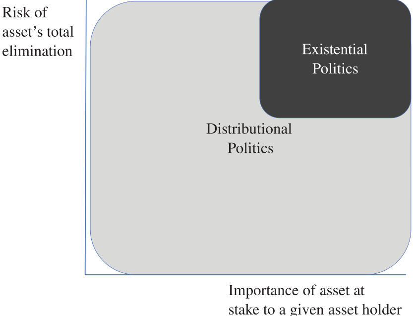
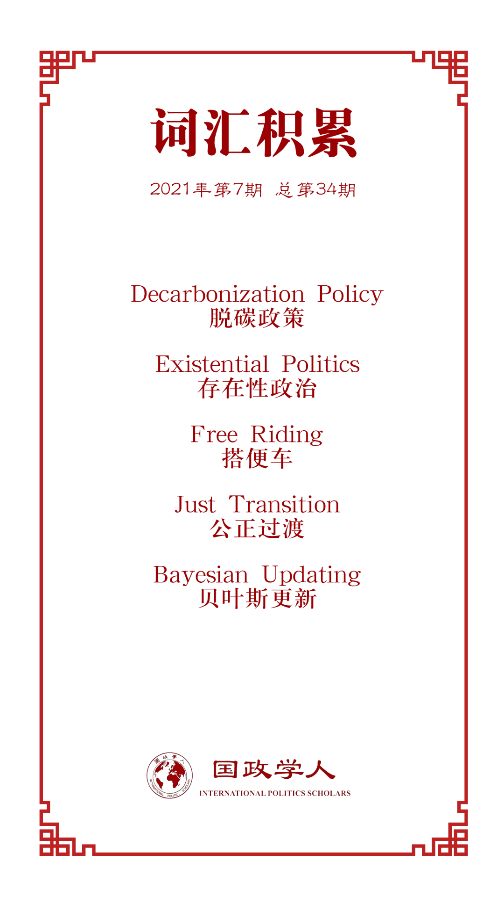

收录于合集

作品简介
【作者】 Jeff D. Colgan，布朗大学政治学系和沃森公共与国际事务研究所副教授。主要研究国际秩序，特别是能源和环境相关的议题。
Jessica F. Green，环境学院政治学系副教授。主要研究气候政策与政治、能源与资源和环境政策与政治。
Thomas N. Hale，牛津大学公共政策（全球公共政策）副教授。主要研究全球化与相互依存，特别是环境、经济和健康问题。
【编译】 陈想（国政学人编译员，对外经济贸易大学国际关系学院）
【校对】 谢菁
【审核】 赖永祯
【排版】 余姣
【美编 】方引弓
【来源】 Colgan, J., Green, J., & Hale, T. (2021). Asset Revaluation and the Existential Politics of Climate Change. International Organization , 75(2), 586-610. doi:10.1017/S0020818320000296
【归档】 《国际关系前沿》2021年第7期，总第34期。
期刊简介
《国际组织》（ International Organization ）创刊于1947年，是由剑桥大学出版社代表国际组织基金会出版的同行评议季刊。涵盖外交政策、国际关系、国际与比较政治经济学、安全政策、环境争端与解决、欧洲一体化、联盟模式与战争、谈判与冲突解决、经济发展与调整、国际资本流动等多个国际事务领域。根据Journal Citation Reports显示，2019年其影响因子为5，在95种国际关系期刊中排名第2。
资产重估和气候变化的
存在性政治
Asset Revaluation and the Existential Politics of
Climate Change
Jeff D. Colgan
Jessica F. Green
Thomas N. Hale
文章导读
学者通常将气候变化作为一个全球性集体行动的挑战，而本文提供了一个基于当前和未来资产重估的动态气候政治理论。气候政治可以被理解为加速气候变化的资产所有者（如化石燃料厂）与易受气候变化影响的资产所有者（如沿海资产）之间的竞争。迄今为止，来自“气候强制”（“climate- forcing”）的资产所有者的阻挠是有效气候政策的一大障碍。但是，随着气候变化和脱碳政策（decarbonization policy）的推进，“影响气候”和“易受气候影响”（climate- vulnerable）资产的持有者都将面临失去部分甚至全部资产价值的压力，以及与之相应的政治权力基础。此种对立利益间的动态竞争可能会在从次国家到超国家的许多政治竞争场所加剧。在这种情况下，气候政治的存在感加强，并有可能重塑国家内部和国家之间的政治联盟。这一转变可能会进一步破坏自由国际秩序（Liberal International Order, LIO）。随着各国以不同速度和幅度制定有利于气候的政策，他们将有动机偏离现有的贸易和经济一体化安排。
本文将“资产”视作一个广泛的类别，包括所有的生产投入和物质财富的来源：资本、劳动力和自然优势。对资产的重估将最终使某些资产变得毫无价值，并带来激烈的分配斗争。也即“存在性政治”（existential politics）。本文致力建立一个关于资产重估对气候政治的影响的政治经济模型。这一重新规划的重要性有三。首先，传统的思维方式过度强调搭便车（free riding），将气候变化视为一个静态的国家间集体行动问题。这越来越受到国家行为的经验性描述以及搭便车情形下气候变化行动演进的挑战。其次，资产重估政治对理解围绕气候变化的利益和争论至关重要。最后，资产重估理论强调对自由国际秩序的一种特殊威胁，这在国际关系的学科文献中并不常见。
本文认为，削弱自由国际秩序（LIO）会带来风险。然而，就气候变化而言，维持现状很可能意味着灾难的发生。
气候变化是前所未有的现象，但近代废除奴隶制的历史的某些特征与之类似。例如，资产为行为者提供的效用可以是物质性的，也可以是意识形态的，而且同一资产可能对一些行为体产生积极效用，而对另一些行为体产生消极效用。偏好强度受行为者的贴现率（他们如何评价一项资产的未来使用）和资产的可替代性影响。补偿有时是可能的，但讨价还价可能会很困难。
01
气候政治的概念化
气候变化是一个威胁倍增器，增加了各种社会经济问题的可能性和严重性，包括贫穷国家的武装暴力。政府间气候变化专门委员会报告称，如果继续不加控制地排放，我们很可能会突破《巴黎协定》规定的将升温限制在1.5℃的理想目标。因此，气候挑战是真实的。本文关注减排政治，而非适应或地球工程等其他应对气候变化的措施。
许多国家不顾集体行动静态逻辑（static logic），选择制定有利于气候的政策，如碳定价或限制排放的法规。这些行动表明，我们低估了气候政治中的三个因素。首先，气候政治的关键驱动因素是国内政治。其次，国家内部的权力和利益分配，以及国家间的关系，都会对气候政治产生影响。最后，战略行为体可能将气候挑战视作动态的，即当前采取的行动可能影响未来偏好和行动的可行性。
气候变化是一个规模空前的分配问题，不仅在国家之间，而且在国家内部。阻挠性游说的例子比比皆是。例如，化石燃料利益集团将大量资金投入与气候有关的游说活动中。
总而言之，各国对补偿问题的重视程度不够。例如，向化石燃料所有者提供资金，以换取他们对进步气候政策的支持。补偿问题，也即“公正过渡”（just transition）。解除阻挠不仅对国内政治，而且对国际合作的前景都很重要，因为国内利益集团决定了国家的偏好。
分配政治是个广泛的类别，涉及“谁得到什么”。为定义存在性政治（existential politics），本文以常识性概念为基础，即存在性政治是一个严格的子集：它是分配政治的一种类型，涉及（1）对某一特定行为者至关重要的事物处于危机之中，以及（2）其被彻底消除的前景。本文在图1中说明了这一点。

图1 分配和存在性政治
本文认为，气候变化的规模将使存在性政治成为理解气候越来越主要的视角。
02
资产评估的动态理论
文章聚焦气候变化和去碳化资产再评估下分配型冲突的变化，提供气候政治新的研究进路。本文理论对政治动员和利益集团的重新组合有启示作用。当行为体由于其他原因已经被组织到一个共同的机构时，动员是最容易的。他们可以轻易地将共同利益转化为政治活动。但不一定要把利益集团看作是固定的。利益分布也会发生变化，行为者会根据资产重估而改变其政策偏好。
翻转、重组和战略再定位提供了三种机制。通过这些机制，政治裂痕和它们之间的权力平衡可能发生变化。例如，尽管汽车制造商传统上抵制气候政策，但一些希望从电动汽车的转变中获利的公司当前却支持他们曾抵制的政策。这样一来，行为体层面的翻转本质上是一种贝叶斯更新（Bayesian updating）的形式，即处于领导地位的人感受到预兆，并相应地调整他们的持股和偏好。对于集体机构—例如国家、行业协会—来说，其偏好是由哪一集团的行为体在内部决策过程中占主导地位决定的。因此，当个别资产持有者的战略汇总到集体层面时，就会发生重组。然而，第二种发生重组的方式是，持有特定机构地位的行为体发生变化。这可能是由于偏好改变（如领导职位通过投票选出），或由于制度上的原因（如领导层是自动轮换的）。
气候引起的翻转和重组可能显著改变气候政治。在未来几年内，气候政治可能发生重大变化。在许多国家，对环境政策的支持与左倾的社会、经济观点有关，然而未来或许事实并非如此。
急剧重组的可能性突出了气候变化和相应反应如何影响多维度的动态。从公司内部到整个经济部门，从小城市到民族国家，气候政治甚至可以扰乱世界政治。
03
对自由国际秩序的启示
自由国际秩序帮助了气候变化的产生，而现在气候变化可能会导致它的毁灭。气候变化所造成的困境威胁自由贸易和经济一体化的基础。各国可以通过从不采取行动到积极缓解温室气体的政策，如高碳税或对某些生产方式施以监管禁令应对气候变化。这反过来将影响各种资产的价值。国家干预经济的气候政策方式可能会在未来更加差异化，这影响到各国是否以及如何选择相互间的贸易。本文考虑三种可能的贸易情景。
一种可能性是，所有国家同时采取非常积极的气候政策。这种可能性非常小，因为这些政策对大多数国家，特别是石油生产国而言，可能要付出很大的代价。另一种本文认为最大的可能是各国气候政策存在重大差异，这将挑战开放市场的自由原则。最后一种可能性是，各国减轻温室气体排放的政策可能是统一的最低限度，因此不会扰乱自由国际秩序的现有安排。这一情形是可能的，但将代表自由国际秩序在经济和政治上的失败。
贸易制度中出现的两个问题支持了文章的预期，即排放国气候政策之间的差异将给自由国际秩序带来压力。首先，欧盟近期已经宣布将实施“碳边境调整机制”；其本质是对不存在碳定价计划的国家所生产的商品征收关税。这有助于保持欧盟商品的竞争力，因为生产成本随着更严格的气候政策上升。而且还有助于减少碳泄漏，使欧盟的企业不会简单地将活动转移到没有碳定价的司法管辖区。这一倡议距离实施还有很长的路要走。其次，第二个问题涉及违反世界贸易组织（WTO）“国民待遇”（national treatment）原则。政府寻求可再生能源的支持，其中许多都是基于可再生能源的“当地含量”（local content）规定。
这一问题可能随着发达国家寻求工业政策实施以促进去碳化而再次出现，正如各种“绿色新政”计划所提议的那样。国家自主推行应对气候变化的产业政策与世贸组织先前商定的措施之间的矛盾当然可以重新谈判，但这将使自由国际秩序的核心原则发挥作用。不同程度的阻挠意味着一些国家会采取统一行动来减少排放，而其他国家则不会。如果前者创造经济边界，它将削弱作为自由国际秩序基础的开放性。
04
结论
在两种可能的情况下，气候变化构成对自由国际秩序的明显威胁。一种情况是自由国际秩序的成员在缓解气候变化方面无所作为，这意味着重大的实质性失败和对自由国际秩序合法性的打击。另一种情况是，各国可能采取有利于气候的政策，但政策力度是失衡的，一些国家比其他国家实施的政策力度更大、成本更高。这种不均衡性将威胁到自由国际秩序的经济开放性，因为拥有较高成本的有利于气候的政策的区域将面临竞争压力，采取碳边境税调整等措施。无论在哪种情况下，气候政治对于理解自由国际秩序的未来都是至关重要的。气候变化和去碳化的分配性后果—及其所产生的阻挠性反应—将成为核心。
资产重估的视角有助于我们分析这些动态。资产将改变其价值以应对气候变化的具体影响，并响应气候政策。行为体将相应地寻求保护他们的资产。越来越多的利益集团之间将出现激烈的冲突，争夺谁的资产得到保护。如果资产是一种生活方式的核心，并且有被消灭的危险，那么政治就会变成存在性的。气候变化的存在性政治—对谁的生活方式继续存在的激烈政治争论—可能会在国际层面产生利益集团的重组和摩擦。
译者评述
后疫情时代的气候政治构成各国转型重要方向，以及响应国际公民社会号召的法理性需要。随着中国“碳达峰”、“碳中和”目标的提出；欧盟绿色转型、绿色经济的开展；中美环境领域的共同合作。气候变化越来越成为各国的一个重要关注点，如何协调国家参与和多社会主体作用发挥的关系是下一阶段需面对的问题。
文章提出气候政治与自由国际秩序的内在不可调和性问题。并指出了未来研究所面临的四个关键问题。第一，意识形态和身份政治将如何以及以何种方式影响气候政治？气候政治超越了基于经济因素的理性主义分析，在分配政治的生存极端中，这些因素将成为气候政治的一部分。为更好地理解气候政治，需对情感、意识形态和身份的作用进行更多研究。第二，在什么条件下可以动员和组织环境政治关涉的行为体？文章指出需要提出创造性的解决方案。第三，什么条件促使党派围绕环境政治轴线重新组合？各党派在多个问题上建立偏好联盟。民粹主义时代，未来政治有可能被部分定义为如何应对气候挑战，这可能会大大扰乱当前多国政党排列组合。第四，倾向不同气候战略的行为体如何竞争应对气候变化的资源库？了解行动体所采取的战略组合，对于解释自由国际秩序如何应对气候挑战是至关重要的。
词汇整理

文章观点不代表本平台观点，本平台评译分享的文章均出于专业学习之用, 不以任何盈利为目的，内容主要呈现对原文的介绍，原文内容请通过各高校购买的数据库自行下载。
好好学习，天天“在看”
国政学人
支持学术公益与知识传播
微信扫一扫赞赏作者 __赞赏
已喜欢，对作者说句悄悄话
取消 __
发送给作者
发送
最多40字，当前共字
上一页 1/3 下一页
长按二维码向我转账
支持学术公益与知识传播
受苹果公司新规定影响，微信 iOS 版的赞赏功能被关闭，可通过二维码转账支持公众号。